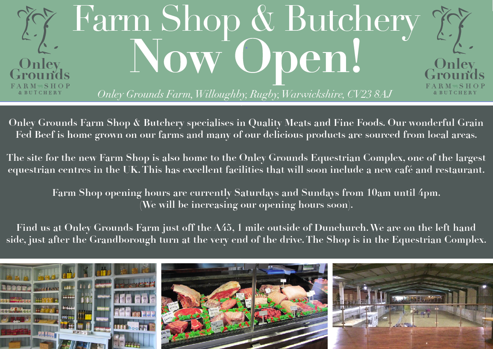
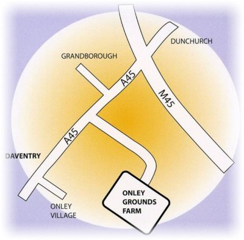

Join us for our Grand Opening weekend at
Onley Grounds Farm Shop, Onley Grounds Farm CV23 8AJ
on the 28th/29th & 30th March 2014


Our site is currently being developed but you can get lots more information about us on
 and Follow @onleyfarmshop
and Follow @onleyfarmshop